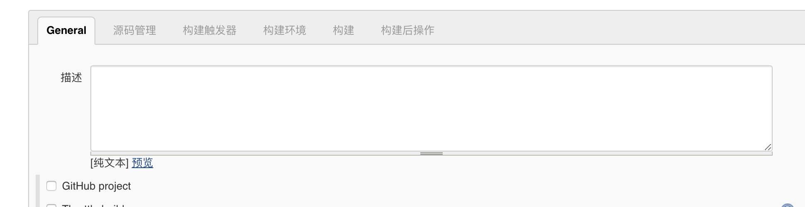
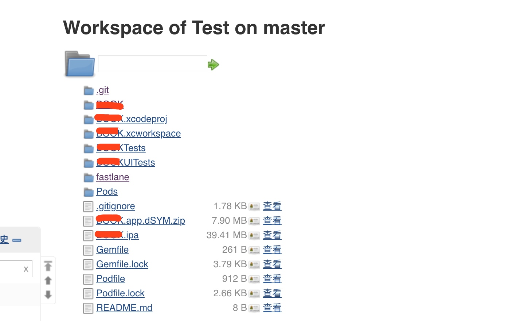

Jenkins + Fastlane 持续集成自动化打包
本文使用 Jenkins 与 Fastlane 结合使用自动编译打包至蒲公英
Fastlane 已在上篇文章讲过，是一套使用Ruby写的自动化工具集，用于iOS和Android的自动化打包、发布等工作，可以节省大量的时间。
Jenkins是一款自包含的开源自动化服务器，可用于自动执行与构建，测试和交付或部署软件有关的各种任务。
Jenkins 安装
- 1. 命令行安装
brew install jenkins
若无homebrew，安装homebrew
ruby -e "$(curl -fsSL https://raw.githubusercontent.com/Homebrew/install/master/install)"
- 2. 官网下载安装
https://jenkins.io/
使用 homebrew 安装成功，显示启动Jenkins方法，如下图

Jenkins 使用
1. 启动Jenkins
```
$ jenkins
```
2. 访问 http://localhost:8080/
```
2.1 弹出Jenkins安装界面，会让你输入安全密码,输入完成之后选择默认安装。
（密码会在终端log日志中打印出来）
2.2 新建管理员账号密码
```
3. 安装插件
创建账户之后会弹出插件安装选项，默认安装或选择安装，可根据需要自行选择
GitLab插件
在可选插件中选择GitLab和Gitlab Hook进行安装。
Xcode插件
在可选插件中选择Xcode进行安装。
...
以默认安装为例，（其实没有必要），后期可根据需要调整安装插件
4. 新建任务
进入主页面，点击新建任务，输入名称，选择"构建一个自由风格的软件项目"

点击确认进入配置页面
配置源码管理，点击 Add 按钮，选择 Jenkins 填写仓库用户名、密码（或其他方式）

配置构建 - 上传至蒲公英
- 输入项目中 fastlane 命令
fastlane beta_pgyer
与工作区对应关系如下：（否则构建 Execte shell 添加 cd ../ 找到fastlane对应目录）
fastlane 文件夹中 Fastfile 文件中对应操作如下：

5. 立即构建

至此，Jenkins与fastlane结合使用的一个简单的自动化构建可正常运行，其他更多构建任务配置信息（构建触发器、构建环境、构建后操作等）可自行根据需要修改
其他方式
Xcode 插件方式
安装 Xcode 插件， 构建选项中会出现Xcode，具体配置信息可自行尝试

jenkins与fastlane分工
jenkins配置项目相关参数，fastlane在fastfile脚本中使用。
例如：在jenkins构建时添加参数：scheme，configuration，version，build
然后在Execute Shell中使用命令：
fastlane beta_pgyer scheme:${scheme} configuration:${configuration} version:${version} build:${build}项目中Fastfile中可以这么使用：
lane :beta_pgyer do |options| #这样就可以获取到jenkins中传入的scheme，configuration，version，build的值
#获取方式：options[:scheme]，options[:configuration]，options[: version]， options[: build]
end